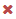
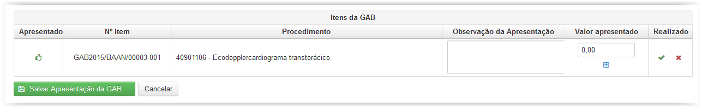
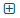

Ao clicar na opção 'Apresentar GAB' surgirá a tela 'Apresentação da GAB' que é o passo inicial da Auditoria Retrospectiva (Fig.34).

Fig.34 Tela 'Apresentação da GAB'
Ao clicar no botão Visualizar() o Sistema leva para a tela de 'Apresentação da GAB' do credenciado escolhido.
Nesta tela (Fig.35) encontram-se os procedimentos da GAB escolhida anteriormente.
O usuário Auditor, de posse das faturas enviadas pelos credenciados (lista que contem os atendimentos realizados no mês) e as respectivas vias de GAB que comprovam a solicitação dos serviços, inicia o processo de inserção dos valores apresentados pelos credenciados, procedimento a procedimento.

Fig.35 Tela 'Apresentação da GAB'
Para marcar um procedimento como não realizado clique no ícone().
Para marcar um procedimento como realizado o usuário deve clicar no ícone().
Ao marcar um procedimento como realizado um novo campo será exibido para a inserção do valor apresentado.

É possível adicionar os valores extras clicando no ícone() que exibirá uma nova janela para que sejam inseridos os valores extras ao procedimento.
O campo 'Observação da Apresentação' pode ser usado para inserir uma observação que será visualizada pelo Auditor Retrospectivo ao realizar a auditoria do item.